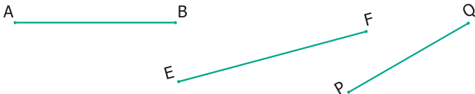
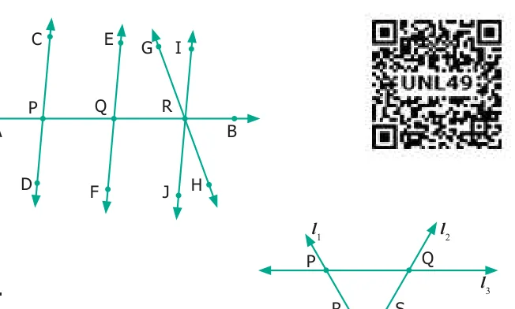

- 1.Fill in the blanks.
- (i)A line through two end points ‘A’ and ‘B’ is denoted by ____________.
- (ii)A line segment from point ‘B’ to point ‘A’ is denoted by ____________.
- (iii)A ray has ____________ end point(s).
- 2.How many line segments are there in the given line? Name them.
- 3.Measure the following line segments.

- 4.Construct a line segment using ruler and compass.
- (i)\(AB = 7.5\) cm (ii) \(CD = 3.6\) cm \(QR = 10\) cm

- 5.From the given figure, name the
- (i)parallel lines
- (ii)intersecting lines
- (iii)points of intersection.
- 6.From the given figure, name
- (i)all pairs of parallel lines.
- (ii)all pairs of intersecting lines.
- (iii)pair of lines whose point of intersection is ‘V’.
- (iv)point of intersection of the lines ‘
- (v)point of intersection of the lines ‘
Objective Type Questions
- 7.The number of line segments in is
- (a)1 (b) 2 (c) 3 (d) 4
- 8.A line is denoted as
- (a)AB (b) AB (c) AB (d) AB